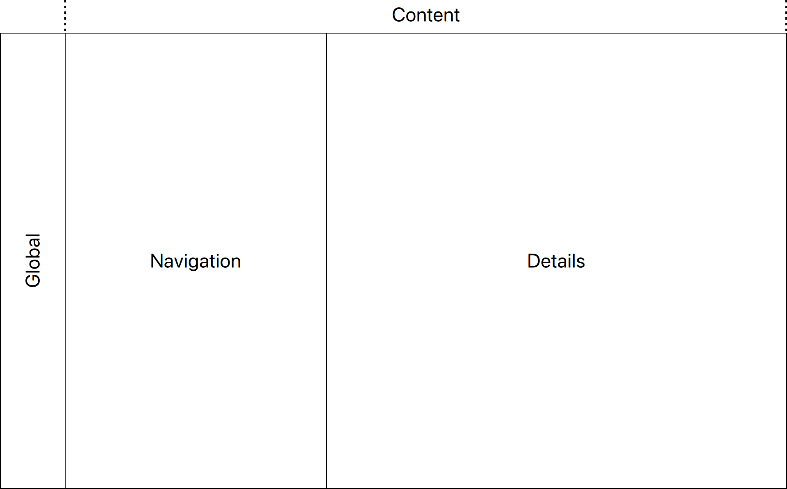
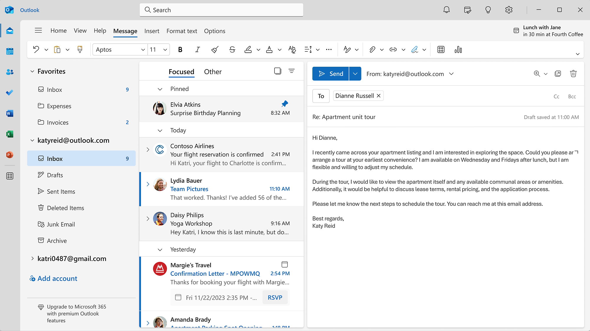
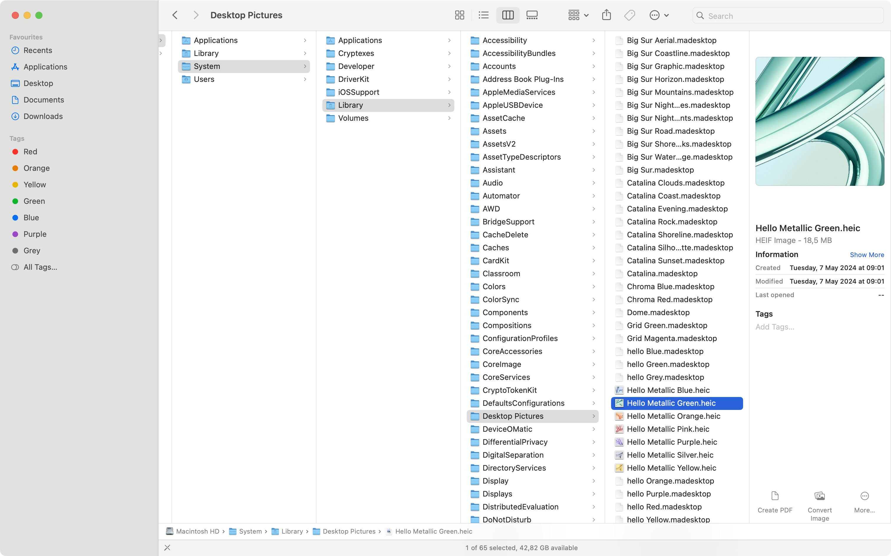
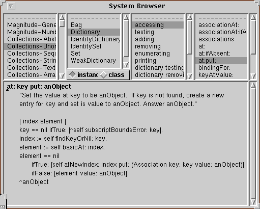
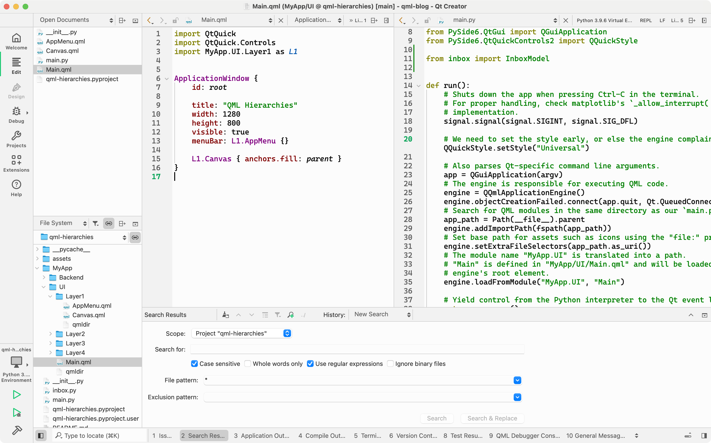
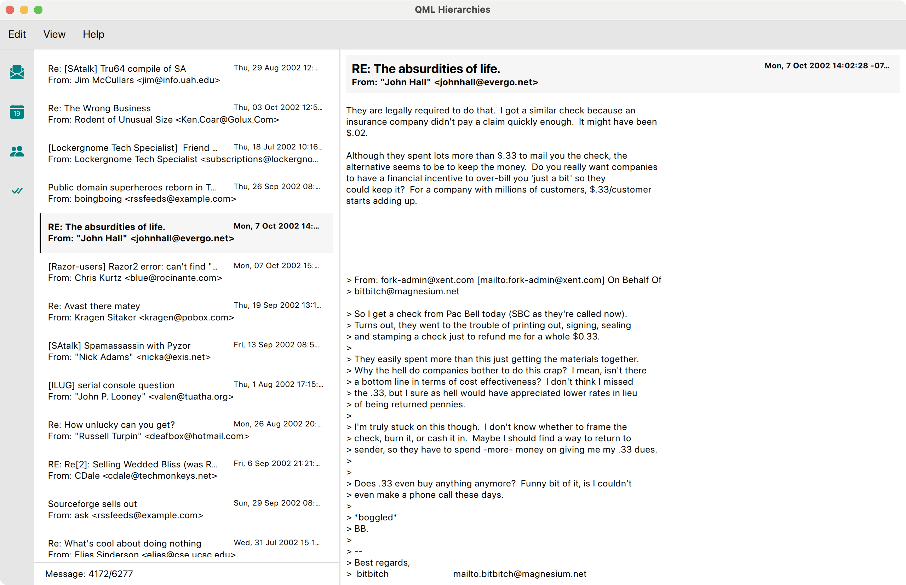

The Cascading UI Wireframe
Introduction
How can we set up a project structure for a QML-heavy application that is easy to navigate for each team member, new or experienced? Something that can be intuitively understand by everyone contributing (yes, that includes your designers)? How do we decide what goes into a QML module? And how many of those modules should we have?
What I propose as a possible answer is a universal UI wireframe [1] that has been frequently rediscovered. When followed everything else usually falls into place.
Its roots can be traced back to at least the early 80s. It's been shown to be useful to a wide range of (desktop) applications. Yet due to its ubiquitousness, users will find the look & feel familiar.
Here's how it looks, in its abstract form:
The concept
I'd like to call this The Cascading UI Wireframe. Like a waterfall, navigation flows left to right. Each pane's interactive state controls what's displayed to the right of it. Conversely, the larger the impact of an action on the UI, the further the user has to move to the left to initiate it.
A tree view navigating a directory structure for instance would affect what's shown in the details pane to the right.
Examples
Microsoft's Outlook illustrates the concept well:
Often the global pane is a collection of tool buttons or shortcuts that switch between different views. This isn't necessarily a violation, as long as interactions in one pane do not replace the contents of the pane to the left of it (or more precisely, the contents of a previous node in the navigation path).
The file explorer on macOS ("Finder"), when switched to column view, offers a modern implementation, with the details pane showing a preview & metadata of the selected file:
Smalltalk's System Browser is perhaps the earliest & most principled example, but with the details pane moved below the navigation panes. Can you sense the similarities to macOS Finder's UI [2]?
The navigation path rarely flows in a straight line. In the System Browser, the details pane is below the others. Yet the cascading effect is still recognisable.
Here's a typical IDE, with two details panes showing source code:
Tab views & pull-down buttons [3] are used to arrange stacks of pages within the same pane, making efficient use of the available screen estate.
Benefits of the Cascading UI Wireframe
- A familiar user experience with bootstrapped design, at reduced costs.
- Proven UI layouts for a wide range of (desktop) applications.
- Easy to extend & to accommodate new features.
- Panes can evolve independently.
To illustrate the benefits we'll build a simplified email client in QML: We parse emails from the file system, show the inbox and display the currently opened email. Full email datasets can be found on the internet; I'll be using a dataset from 2002 that I found on Kaggle [4]. This is how it looks:
Here's a video clip to demonstrate the implemented (and the missing) behaviour:
A layered architecture for the presentation layer
The verticality derived from the semantics of our UI wireframe also informs our software design. Each cascading step can be mapped to a layer of UI components.
At the top of the hierarchy, we'll find our ApplicationWindow (in Main.qml), housing the application menu, an optional footer & our main layout, the UI Canvas.
Our layers are organised as a flat list of directories within MyApp/UI.
How the application looks when limited to Layer 1: The Canvas remains empty.
Each layer only uses components from the layers below, or, even stricter, from the next layer beneath. If we want to use a sibling component from the same layer, we first have to resolve the conflict by moving the component A) to a layer below, B) its own layer, or C) by moving the using component up. Thus, each layer conflict is resolvable.
Enforcing this rule is what makes our software design a layered system. Here's the essential definition [5]:
In a layered system, each layer:
- Depends on the layers beneath it;
- Is independent of the layers on top of it, having no knowledge of the layers using it.
We already understand how this will lead to tidier QML components & decreased coupling. The first point makes us factor out even small QML bits into their own components. This helps to avoid layer access violations. The second point requires us to be explicit about a component's dependencies. In general, this becomes simpler the smaller the components are, so there is a direct synergy with the first point. Thinking in terms of UI layers greatly helps us to decide when & where to split components.
In the following code listing, the import directive for Layer1 introduces a shortened namespace, L1. Both components from that layer, AppMenu and Canvas that are used by Main are prefixed accordingly:
import MyApp.UI.Layer1 as L1 // Main.qml ApplicationWindow { title: "QML Hierarchies" width: 1280 height: 800 visible: true menuBar: L1.AppMenu {} L1.Canvas { anchors.fill: parent } }
Let's drill down further into MyApp.UI.Layer1.Canvas. Replacing the dots with slashes and adding the .qml suffix yields the path & file name, MyApp/UI/Layer1/Canvas.qml:
import MyApp.UI.Layer2 as L2 // Layer1/Canvas.qml Container { id: root contentItem: RowLayout { spacing: 0 } L2.ToolBar { Layout.fillHeight: true topPadding: 8 } L2.ContentPane { Layout.fillHeight: true Layout.fillWidth: true } }
Already we notice the shortness of the file. This is intentional as we follow a stricter separation of concerns. Next stop is MyApp.UI.Layer2.ContentPane:
import MyApp.UI.Layer3 as L3 // Layer2/ContentPane.qml Control { id: root contentItem: SplitView { Column { SplitView.preferredWidth: root.contentItem.width * .35 L3.InboxView { id: inbox width: parent.width height: parent.height - parent.spacing - status.height } L3.InboxStatus { id: status width: parent.width messageIndex: inbox.currentIndex messageCount: inbox.count } } L3.MessageView { model: inbox.model currentIndex: inbox.currentIndex } } }
From the names alone, we know that we are getting closer to the core of business logic. Whereas the previous component names felt generic, InboxView, InboxStatus & MessageView provide us with concrete hints on what to expect. The inbox is implemented as a common ListView, which, if done right, offers keyboard navigation out of the box.
import MyApp.Backend as BE import MyApp.UI.Layer4 as L4 // Layer3/InboxView.qml Control { id: root readonly property alias model: view.model readonly property alias currentIndex: view.currentIndex readonly property alias count: view.count padding: 8 contentItem: ListView { id: view model: BE.InboxModel { directory: "file:assets/inbox" } clip: true focus: true highlight: L4.ItemHighlight {} highlightMoveDuration: 120 delegate: ItemDelegate { required property int index required property var modelData width: view.width action: Action { onTriggered: { view.currentIndex = index; // Allow the user to refocus our ListView by clicking on a delegate. // Focus can be lost through tab navigation, for instance. view.focus = true; } } contentItem: L4.MessageHeading { message: parent.modelData bold: parent.ListView.isCurrentItem } } ScrollBar.vertical: ScrollBar {} } }
That's it, that's all there is to our inbox! The model, currentIndex & count ListView properties are depended on by other Layer3 components. They are wired together in a Layer2 component, the previously shown ContentPane, thus ensuring layer access integrity.
Notice how we wrapped the actual delegate item, L4.MessageHeading, with an ItemDelegate. This allows us to bake ListView-specific behaviour into the InboxView instead of spreading it into L4.MessageHeading, thus keeping it highly reusable.
Even a small detail such as factoring out the highlight item into L4.ItemHighlight improves readability of our ListView implementation. As soon as the amount of details in our InboxView drops below a certain threshold, the source code becomes trivial to read.
All four layers in expanded view. Each layer forms its own module, with a dedicated qmldir.
The inbox model is a QAbstractItemModel, implemented in Python. It reads emails through Python's email module [6] which does all the parsing for us. Each message's headers and payload is then mapped to custom Qt::ItemDataRole's before being transported to the UI as needed [7].
To speed up parsing we use Python's own ProcessPoolExecutor. This also means we can launch the application sooner since the heavy lifting as been dispatched to a task queue.
Once parsed, the results are copied a couple messages at a time into the model that is exposed to InboxView. To keep the UI responsive, we copy in a periodically invoked slot (Qtimer.singleShot). For about 6300 emails, this takes less than a second on a MacBook Pro M1.
@QmlElement class InboxModel(QAbstractItemModel): ... def append_parsed_messages_from_task_queue(self): try: begin = len(self._messages) next_messages = next(self._pending_messages) end = begin + len(next_messages) self.beginInsertRows(QModelIndex(), begin, end - 1) self._messages.extend(next_messages) self.endInsertRows() QTimer.singleShot(0, self.append_parsed_messages_from_task_queue) except StopIteration: pass @Property(QUrl) def directory(self): return self._directory @directory.setter def directory(self, url: QUrl): ... with ProcessPoolExecutor(max_workers=8) as executor: files = chunk([fn for fn in path.iterdir()], 64) self._pending_messages = executor.map(parse_emails, files) self.append_parsed_messages_from_task_queue() ...
In total, our toy example tops out at around 500-600 lines of code, Python & QML combined. The QML parts and how they are organised might serve as an inspiration for your next project. As usual, you'll find the complete example on GitHub [8].
References
| [1] | What are wireframes? |
| [2] | "Smalltalk Blew Steve Jobs’s Mind" |
| [3] | Apple HIG on tab views & pull-down buttons |
| [4] | Download and move the email dataset contents from ham_zipped/main_ham to the example project's assets/inbox path. |
| [5] | Layered system definition |
| [6] | Python3 email module examples |
| [7] | QAbstractItemModel's Qt.ItemDataRole |
| [8] | Code example on GitHub |